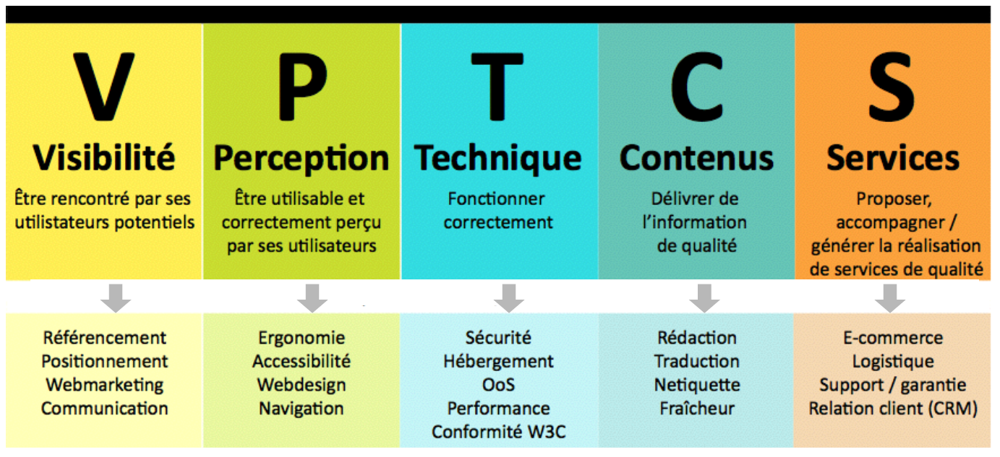
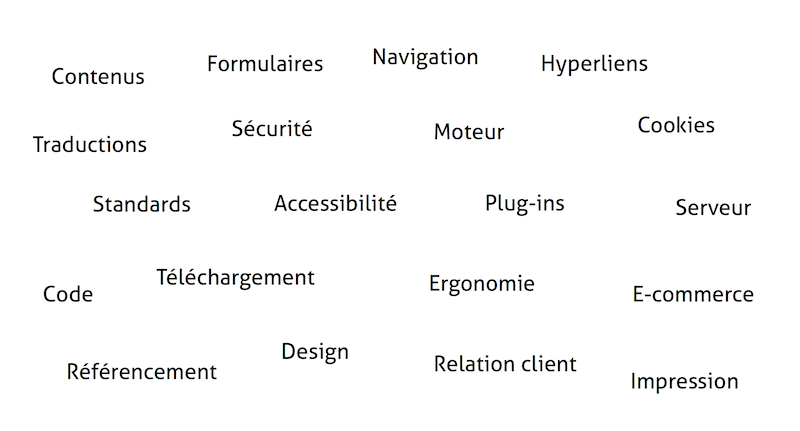
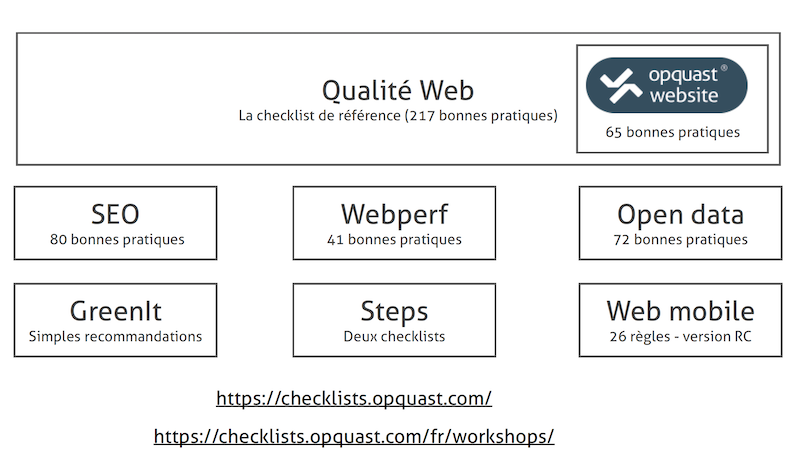

Séance 10 : Qualité Web
Compétences à acquérir lors de cette séance 9 :
Comprendre les bases d'une norme de qualité web
devoir (30 minutes)
Votre enseignant vous distribue un devoir papier.....
Comprendre les bases d'une norme de qualité web
La norme OPQUAST
Lors de cette séance vous allez tout d’abord apprendre la méthodologie permettant de réaliser une critique (positive comme négative) d’un site web. Cette analyse se fera selon le modèle VPTCS de la norme OPQUAST.
Lors de ce TP nous analyserons principalement les aspects techniques, ergonomiques et enfin les contenus. Nous travaillerons sur lun site que vous devrez auditer.
[Définition]
- La qualité Web est l’aptitude d’un service en ligne à satisfaire des exigences implicites ou explicites.
- Elle permet de détecter et supprimer les défauts sur les sites.
- Elle permet d’améliorer l’attraction, la fidélisation et la conversion
[Un référentiel]

Comment définir des règles ?
Chaque bonne pratique sera :
- utile pour les utilisateurs
- vérifiable en ligne
- réaliste
- internationale
- le résultat d’un consensus
[Une bonne pratique Internationale]
- Le site est déclaré à la CNIL : NON!
- La politique de confidentialité et de respect de la vie privée est accessible depuis toues les pages : OUI
[Une bonne pratique est vérifiable]
- Les hyperliens sont vérifiés toutes les semaines : NON!
- Tous les hyperliens internes du site sont valides : OUI
[Une bonne pratique fait consensus]
- Les hyperliens externes s’ouvrent dans une nouvelle fenêtre : NON!
- Les utilisateurs est averti des ouvertures de nouvelles fenêtres
[Une bonne pratique est réaliste]
- Toutes les pages du site sont conformes au standard XHTML 1.0 strict
- Le code source de chaque page débute par une déclaration de type de document (doctype) conforme aux standards du W3C
[Une bonne pratique est utile]
- Chaque page contient la date de création de mise à jour et de péremption
- Les dates sont présentées dans des formats explicites
[La qualité : un vaste sujet]

[La qualité : la check-list Opquast]

Définissons ensemble une liste de points clés à vérifier pour évaluer la qualité d'un site selon la norme opquast. Nous nous focaliserons sur 3 axes du modèle VPTCS.
- Perception du site
- Contenu du site
- Qualité du code source
S'auto-évaluer : savez-vous auditer la qualité d'un site web ?
Vous allez devoir analyser un site web dont le nom est "hexaconf". Avant de télécharger le code du site, prenez le temps de lire un extrait de cahier des charges initial.
Cahier des charges du site hexaconf
Ce site a pour objectif de référencer les conférences françaises parlant du numérique. Voici un extrait du cahier des charges. Chaque année en France, un grand nombre de conférences sont organisées afin de mettre en avant le secteur du web et plus généralement celui du numérique. Ces conférences ont chacune leur spécificités. Le site a pour ambition de présenter les conférences les plus intéressantes et d’en permettre une présentation pertinente.
Objectifs opérationnels : La partie vitrine du site web doit permettre aux internautes en général, et plus particulièrement à ceux ayant un intérêt envers le numérique, d’accéder à une information pertinente sur les contenus et objectifs de la formation. Le site devra donc donner accès à un contenu riche sur les conférences se tenant en France. Il doit permettre de fournir des outils simples et efficaces permettant de rechercher des conférences selon divers critères. Ce site se veut également communautaire. Un internaute doit pouvoir proposer une conférence qui, une fois modérée, fera parti du site. La mise en place et le développement du site web visera ainsi à atteindre plusieurs objectifs concomitants :
- Objectif 1 : Informer. Un site dynamique diffusant des informations accessibles et réutilisables Le site web doit présenter ce pour quoi il a été créé (cf. ci-dessus). Combinant stock, liens et flux d’informations, il doit permettre de produire, mettre en forme, et diffuser des informations détaillées (avec des liens vers des sites externes.) La mise à jour des contenus doit reposer sur un système simple (utilisable par des non-spécialistes) et réactif (rapidité d’exécution). Les contenus publiés doivent respecter les normes en matière d’accessibilité pour être lus par le plus grand nombre quel que soit le matériel utilisé.
- Objectif 2 : Administrer. Le site contiendra une partie (accessible uniquement par authentification) permettant de saisir/ visualiser des informations. Tout comme pour la partie vitrine du site, les pages doivent respecter les standards de l’accessibilité et ergonomie permettant, à un non spécialiste d’utiliser de manière intuitive et efficaces ces services.
Le prestataire est chargé de conseiller le département et de concevoir, en collaboration avec la personne responsable du design dans l’équipe de maitrise d’ouvrage, le design d’information (arborescence du site, organisation des contenus centrée sur l’utilisateur et ses usages, écriture adaptée au web), la ligne graphique (respect de l’identité visuelle, attrait et convivialité) et l’ergonomie de navigation (simple et intuitive, réduction maximale du temps d’apprentissage requis pour se repérer et trouver l’information recherchée) qui seront appliqués au site . Ce travail de conception fera l’objet d’une charte répertoriant l’ensemble des principes retenus et illustrés par des écrans types et fonctionnels. Cette charte permettra : d’assurer une cohérence de fond et de forme à l’ensemble de l’offre de contenus et services proposée sur le site et de faciliter son intégration au moment de l’installation de la solution technique.
Pour aider le Département informatique de l’IUT a constitué le socle initial des contenus qui seront proposé au moment de l’ouverture du site au public, le prestataire s’engage à créer et publier les pages dans la limite d’un volume de : 6 pages. La page d’accueil permettra de fournir une information claire et ciblée sur le contenu du site. Elle devra automatiquement mettre en avant la conférence la plus proche dans le temps et la conférence la mieux notée par les utilisateurs du site Une page donnant accès à un descriptif des différentes conférences et de pouvoir y réaliser des recherches selon des critères prédéfinis. A chaque conférence il faudra associer, au minimum, les informations suivantes : lieu, date, sujets (des tags parmi un ensemble de tags prédéfinis : technique, sociale, entrepreneuriat, ...), prix, âge de la conférence, taille de la conférence, si elle stream, si elle met ensuite sur internet les vidéos/slides des présentations, langues des présentations anglais et/ou français ; liens vers comptes réseaux sociaux. Chaque conférence peut être notée par un internaute. Il faut pouvoir laisser une note (système d’étoiles) indiquant ce qu’on a pensé de la qualité de la conférence (idéalement après y avoir assisté). Chaque conférence proposera, aux internautes identifiés la fonction suivre. Cette fonction permet d’être tenu au courant par mail à J-15 du début de la conférence. Une page donnant accès à un calendrier dans lequel figure la tenue des conférences. Ce calendrier doit pouvoir être importé aux formats classiques. Une page permettant de proposer une conférence qui sera ajoutée sur le site après modération. Proposer une conférence nécessite d’être identifiée (et donc d’avoir créé un compte). Un formulaire de contact permettant de s’inscrire au site. Une page positionnant toutes les conférences sur une carte de France et mettant graphiquement la conférence la plus proche géographiquement de l’internaute.
A vous de jouer
Téléchargez le code d'hexaconf.fr et analysez UNIQUEMENT la page d'accueil et la page "proposer un évènement" en appliquant la méthodologie vue précédemment.
Powered by w3.css